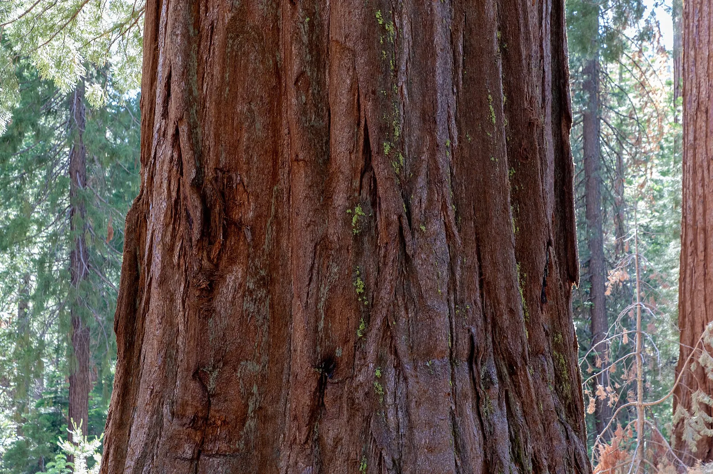
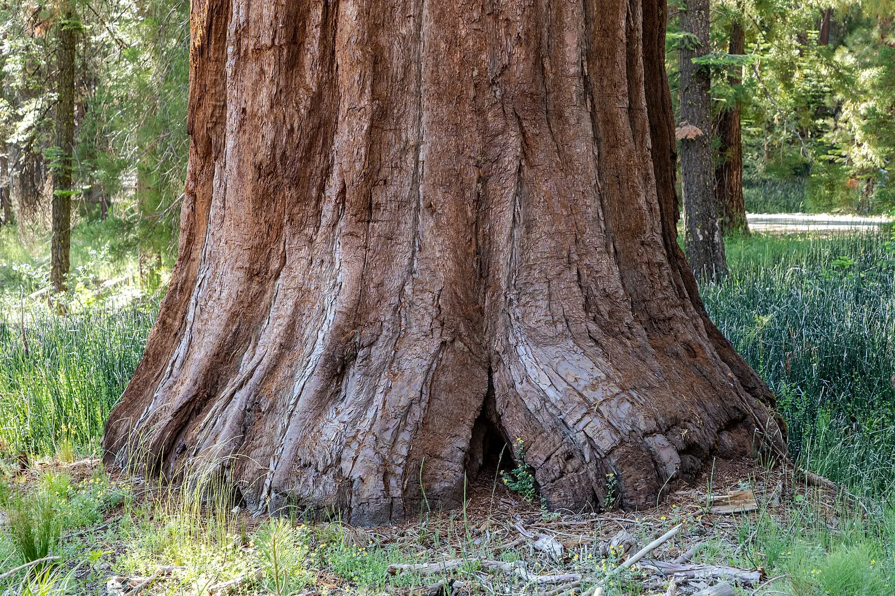

O8 · Oeste
O8 · Westen
O8 · West
Secuoyas gigantes
Subí con mucha fuerza y vi las secuoyas gigantes, árbol. Abuelos tuyos de ochenta metros de alto y tres mil años de vida. Me contaron que tienen una corteza tan gruesa que resiste el fuego, y piñas que sólo se abren con el calor del incendio. Vi Osos, águilas y ardillas.
Ich stieg mit aller Kraft hinauf und sah die Riesenmammutbäume, Baum. Großväter von dir, achtzig Meter hoch und dreitausend Jahre alt. Sie erzählten mir, sie hätten eine so dicke Rinde, dass sie dem Feuer standhält, und Zapfen, die sich nur in der Hitze eines Brandes öffnen. Ich sah Bären, Adler und Eichhörnchen.
I climbed with all my strength and saw the giant sequoias, tree. Grandfathers of yours, eighty metres tall and three thousand years old. They told me their bark is so thick it withstands fire, and their cones open only in the heat of a blaze. I saw bears, eagles and squirrels.
Información
Information
Information
Y vi a las secuoyas, árbol, tus abuelas, las que resistieron el fuego tres mil años, arder como antorchas. En dos veranos murió casi una de cada cinco. El fuego que antes abría sus piñas, ahora las mata.
Und ich sah die Mammutbäume, Baum, deine Großmütter, die dreitausend Jahre lang dem Feuer standhielten, brennen wie Fackeln. In zwei Sommern starb fast jeder fünfte. Das Feuer, das früher ihre Zapfen öffnete, tötet sie jetzt.
And I saw the sequoias, tree, your grandmothers, the ones that withstood fire for three thousand years, burning like torches. In two summers almost one in five died. The fire that once opened their cones now kills them.
El incendio Castle, en 2020, mató entre 7.500 y 10.600 secuoyas grandes —las de más de 1,20 metros de diámetro de tronco—: entre el 10 % y el 14 % de toda la población de Sierra Nevada. Dentro del perímetro del fuego murieron entre el 31 % y el 42 %.
Al año siguiente, los incendios KNP Complex y Windy mataron entre 2.261 y 3.637 más. Sumando las dos temporadas, el Servicio de Parques Nacionales estima que murió entre el 13 % y el 19 % de las secuoyas grandes del mundo: entre 8.431 y 11.897 árboles.
El incendio Castle, en 2020, mató entre 7.500 y 10.600 secuoyas grandes —las de más de 1,20 metros de diámetro de tronco—: entre el 10 % y el 14 % de toda la población de Sierra Nevada. Dentro del perímetro del fuego murieron entre el 31 % y el 42 %.
Al año siguiente, los incendios KNP Complex y Windy mataron entre 2.261 y 3.637 más. Sumando las dos temporadas, el Servicio de Parques Nacionales estima que murió entre el 13 % y el 19 % de las secuoyas grandes del mundo: entre 8.431 y 11.897 árboles.
El incendio Castle, en 2020, mató entre 7.500 y 10.600 secuoyas grandes —las de más de 1,20 metros de diámetro de tronco—: entre el 10 % y el 14 % de toda la población de Sierra Nevada. Dentro del perímetro del fuego murieron entre el 31 % y el 42 %.
Al año siguiente, los incendios KNP Complex y Windy mataron entre 2.261 y 3.637 más. Sumando las dos temporadas, el Servicio de Parques Nacionales estima que murió entre el 13 % y el 19 % de las secuoyas grandes del mundo: entre 8.431 y 11.897 árboles.
Galería
Galerie
Gallery



Fuentes
Quellen
Sources
- National Park Service, Estados Unidos, Wildfires Kill Unprecedented Numbers of Large Sequoia Trees — https://www.nps.gov/articles/000/wildfires-kill-unprecedented-numbers-of-large-sequoia-trees.htm consultado 2026-10-05abgerufen 2026-10-05accessed 2026-10-05
- National Park Service, Estados Unidos, Giant Sequoia Mortality Estimates Released for the 2021 KNP Complex and Windy Fire — https://www.nps.gov/seki/learn/news/giant-sequoia-mortality-estimates-released-for-the-2021-knp-complex-and-windy-fire.htm consultado 2026-10-05abgerufen 2026-10-05accessed 2026-10-05